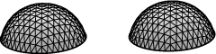

Optimizing scale. The default mode of gradient descent is to choose the scale that minimizes the energy in that direction of motion. This involves a line search along the line of motion for the minimum energy. Evolver does the search by evaluating the energy for several scales, raising or lowering the scale until it has three scales for which the middle energy is lower than for the outer two. Then it uses quadratic intepolation to get the final scale. The steps of one iteration are listed in detail here.
Scale limit. It is possible for the aforementioned line search to go too far in certain circumstances, so there is an upper bound set for the scale, the default limit being 1.0. This can be changed by using the "scale_limit value" phrase in the top of the datafile, or by setting the scale_limit variable at run time, or in response to the prompt produced by the "m" command.
Reasonable scales. Trouble in evolving is usually signaled by a small scale, which means there is some obstacle to evolution. Of course, that means you have to know what a reasonable scale is, and that depends on the type of energy you are using and how refined your surface si. In normal evolution, the size of the scale is set by the development of small-scale roughness in the surface. Combined with a little dimensional analysis, that leads to the conclusion that the scale should vary as L2-q, where L is the typical edge length and the units of energy are lengthq. The dimensional analysis goes like this: Let D be the perturbation of one vertex away from an equilibrium surface. In general, energy is quadratic around an equibrium, so
So the gradient of energy at the vertex isE = D2Lq-2
The motion is the scale times the gradient, which we want proportional to D, sograd E = 2 D Lq-2
So scale is on the order of L 2-q. Some examples:scale * grad E = scale * 2 D Lq-2 = D
| Energy | Energy dimension | Scale | Example file |
| Area of soapfilm | L2 | L0 | quad.fe |
| Length of string | L1 | L1 | flower.fe |
| Squared curvature of string | L-1 | L3 | elastic8.fe |
| Squared mean curvature of soapfilm | L0 | L2 | sqcube.fe |
Another common influence on the scale for area evolution is the surface tension. Doing a liquid solder simulation in a system of units where the surface tension of facets is assigned a value 470, say, means that all calculated gradients are multiplied by 470, so the scale decreases by a factor of 470 to get the same geometric motion. Thus you should set scale_limit to be the inverse of the surface tension.
Fixed scale. It can be useful to iterate with a fixed scale. For example, if you make a change to the volume of a body and want that adjustment to take effect without the complication of simultaneously trying to minimize energy, then iterate once with a zero scale. For example, if you run cube.fe and do
body[1].target := 2 m 0 g myou will see pure volume adjustment. The 'm' command toggles back and forth between optimizing and fixed scale, except when you follow it by a number it sets a fixed scale.
Another use for fixed scale is simulating grain growth. Here the motion of grain boundaries is defined to have a velocity proportional to their mean curvature, so you want to keep the scale small enough so the linear approximation to the motion is reasonably good.
Convergence. It is impossible to tell, in general, when gradient descent is close to convergence. Surfaces can be arbitrarily far from the minimum, and move toward it arbitrarily slowly. As an example, run the capillary3.fe datafile. This is a slightly pinched tube with a soapfilm across it. The minimum energy comes when the film is exactly at the middle of the neck. Try this evolution:
r r r g 100Not at the neck yet. Try more g steps. See how many it takes you to converge to the minimum energy of 3.13262861328124 to, say, 8 decimal places.
Another problem can be saddle points. If you start with a symmetric surface, then under 'g' iteration the surface should stay symmetric. If the surface has a symmetric saddle point, then the iteration could approach it and look like it was converging to a minimum.
In practice, the conjugate gradient method remembers a cumulative "history vector", which it combines with the ordinary gradient to figure out the conjugate gradient direction. The upshot is that conjugate gradient can converge much faster than ordinary gradient descent. In the ideal case of a quadratic energy function in N variables and perfect numerical accuracy, conjugate gradient will reach the exact minimum within N steps.
Conjugate gradient can be toggled with the U command, or with the conj_grad toggle. It should always be used with optimizing scale.
To see the dramatic improvement conjugate gradient can produce, run capillary3.fe again, with this evolution:
r r r g 10 U g 100Conjugate gradient can get in trouble, particularly when you use it too early when the surface is making large adjustments. To see an example, run capillary3.fe with this evolution:
r r r U g 100and take a close look at the film in the center.
In sum, one should run a few steps of ordinary gradient descent at the start of evolving a surface or after making big changes, but the bulk of iteration should be done in conjugate gradient mode.
Notes: The conjugate gradient method is designed for quadratic energy functions. As long as the energy function is nearly quadratic, as it should be near an energy minimum, conjugate gradient works well. Otherwise, it may misbehave, either by taking too big steps or by getting stalled. Both effects are due to the history vector being misleading. To prevent too big steps, one should iterate without conjugate gradient for a few steps whenever significant changes are made to the surface (refining, changing a constraint, etc.). On the other hand, if it looks like conjugate gradient is converging, it may have simply become confused by its own history. See the catenoid example for a case in point. A danger signal is the scale factor going to zero. If you are suspicious, toggle conjugate gradient off and on ("U 2" does nicely) to erase the history vector and start over.
